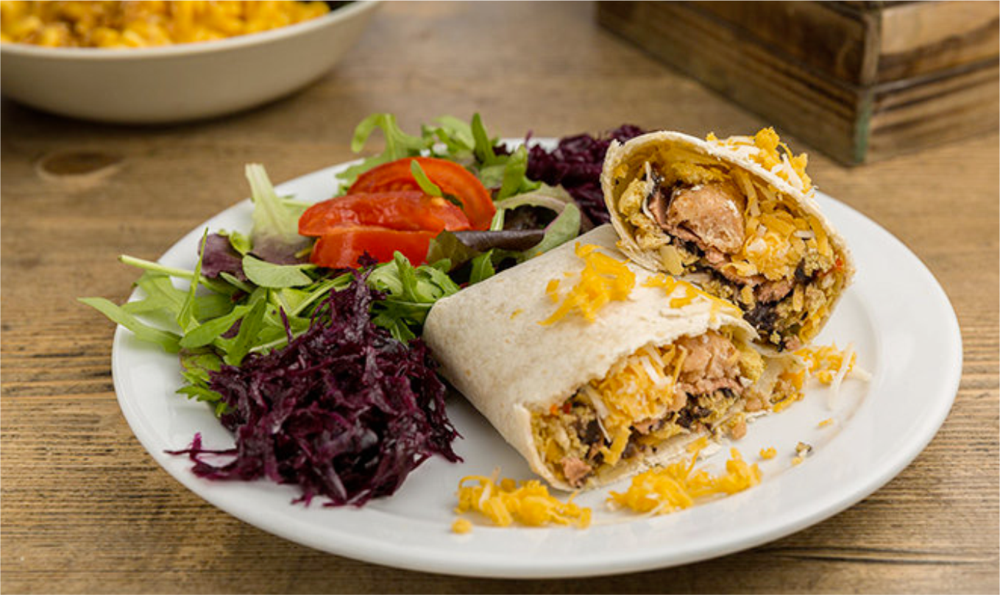
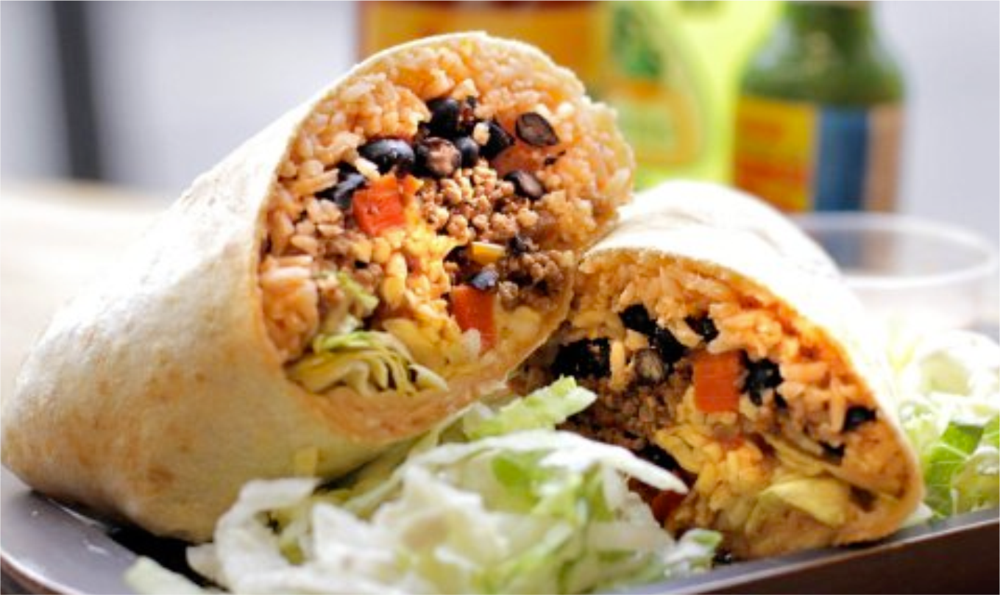
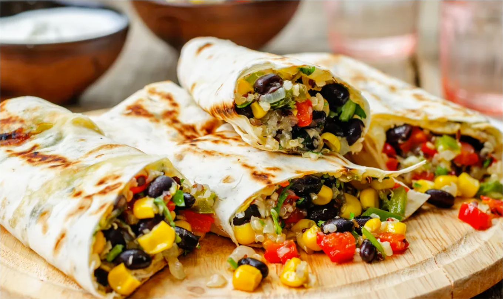

Salsa Chicken Burrito Filling
This standard burrito filling features shredded chicken simmered with tomato sauce, salsa, and seasonings.

Delicious Black Bean Burritos
Black beans and cilantro combine with onions, bell peppers and jalapenos and cubes of cream cheese.

Juan's Big Bad Bean Burrito
Vegetarian refried beans, avocado slices, and pico de gallo add up to one hearty veggie burrito.